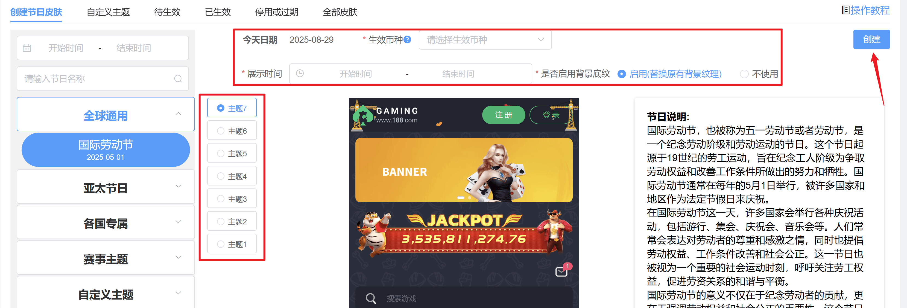
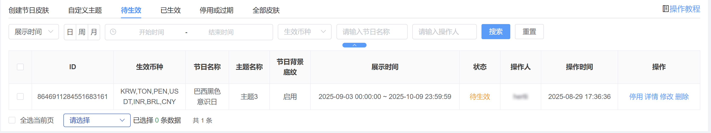
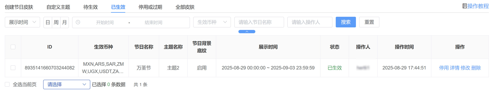
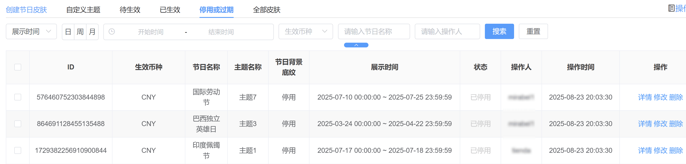
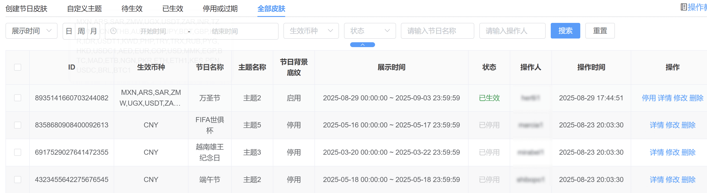
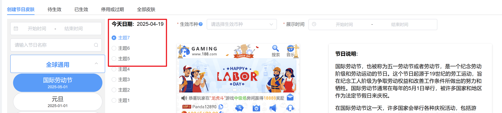
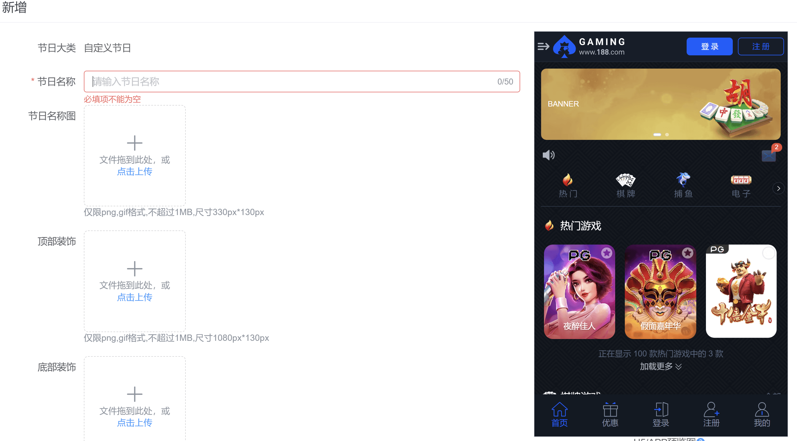
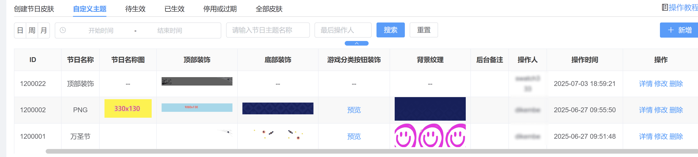

节日主题-支持多品牌
1、创建节日皮肤
此页面展示所有主题，已按照不同类型进行分类，方便查找
选择对应主题，配置生效币种和时间，选择是否启用背景纹理，点击创建
系统会校验当前相同时间是否有其他主题展示，同一时间同一币种仅展示一种主题
符合当前展示时间的会被分类到【已生效】，后续时间再展示的会被分类到【待生效】

2、待生效
这里展示后续生效的主题，支持停用、修改、删除

3、已生效
展示当前生效中的主题，支持停用、修改、删除

4、停用或过期
展示已停用后者过期的主题，支持修改、删除

5、全部皮肤
所有有创建记录的皮肤都在此展示，可根据币种、状态等查询，支持停用、修改、删除

6、每月都有新增的节日主题，编号数字大表示越新，定制版建议选择编号数字大的主题更能适配，编号数字小的主题定制版式不展示
举例：主题5-主题7为最新主题，建议定制版适配，通用版不受影响

7、自定义节日主题
(1)、点击新增进入创建主题页面
(2)、按照顺序输入节日名称、顶部装饰、底部装饰、游戏分类装饰、背景纹理，右边可查看相关预览状态
(3)、游戏分类装饰H5和APP展示会有差异，有选中状态时才展示按钮装饰
(4)、配置保存后回到创建主题页面，在【自定义主题分类】中找到刚才的主题名称，即可创建

